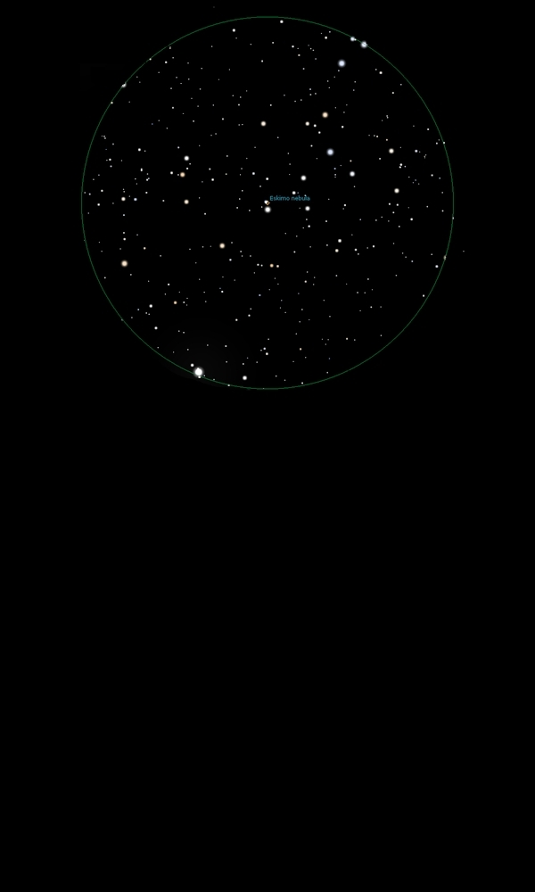

NGC 2392
Planetary
Nebula in Gemini
NGC 2392
Mag 10.1
The Eskimo Nebula,
The Clownface Nebula, Caldwell 39
08/01/16
The Eskimo Nebula, C39
Easy to locate, sitting as it does just outside a spear shape
formed by Wasat, Delta Gem, 55 Gem, HIP 35550 at Mag 3.5 at
it's point, 63 Gem, HIP 36238 at Mag 5.2 and 56 Gem, HIP 35699
at Mag 5.05 at each side and 61 Gem, HIP 36156 at Mag 5.9 at
the spears base
The Eskimo Nebula forms a triangle with 63 and 61 Gem
In 25mm it sits in a nice line of stars adjacent to HIP 36370
and looks like an out of focus star almost touching HIP 36370
Distinctly round in 12mm with the central star, HIP 36369 at
Mag 10.5 visible in moments of good seeing
No trace of any structure but it's still low down so worth a
proper look when it rises higher
12/01/16
A sharper view than when viewed on the 8th with the central
star, HIP 36369 at Mag 10.5 a tiny point surrounded by a quite
bright but small disk
Some hint of the surrounding outer shell in moments of good
seeing
When viewed in 12mm with UHC filter the central star
disappears, and a slightly clearer view of the outer shell,
however an overall better view without
A tantalizing glimpse through 18mm with Barlow before the
clouds rolled in
15/01/16
Wanted another go at teasing out some of the distinctive rings
The sky is nice and sharp but a five day old moon is not
helping
However in 12mm central star, bright tight 'inner ring' and
faint diffuse 'outer ring all visible, if very small!
The radius of the outer ring appears to be double that of the
inner
Great to locate in finderscope